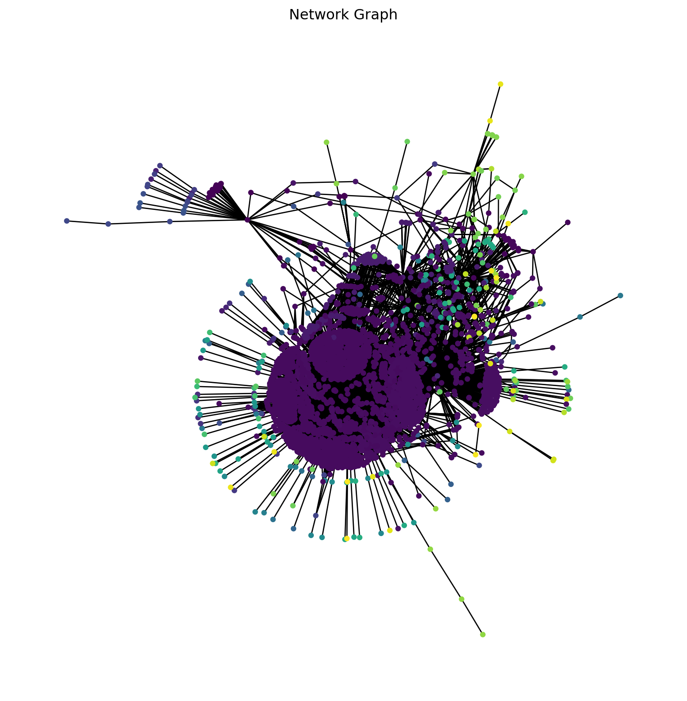

Alex Schaef, Nathaniel Hamilton Thompson, Orin Crouse
Published
Invalid Date
Decentralization of the Cryptocurrency dy/dx on the Ethereum Blockchain
Alex Schaef, Nathaniel Hamilton Thompson, Orin Crouse
Abstract
Cryptocurrency exchanges heavily emphasize being a “decentralized finance,” in that all transactions of cryptocurrencies are made between two individuals without requiring a central intermediary. However, recent studies have expressed doubt about the decentralized nature of cryptocurrency. In this paper, we study the Euler crypto token (in addition to a previous study done over the AAVE token) to conclude that, although there are some centralized components within the network of transactions, trends across multiple tokens still indicate a decentralized nature to the network.
#Introduction
Cryptocurrency prides itself on being a truly decentralized finance, meaning transactions can happen between any two individuals, or more, without the need of a central intermediary. In our lives, the best example of an intermediary is a bank. With the U.S. dollar, transactions are normally approved by a bank, meaning most exchanges of money go through a central point; the majority of transactions are between a person and a bank. Cryptocurrency is different in that transactions are made entirely between individuals, with no central intermediary. These transactions are recorded on a blockchain, which is essentially a virtual ledger. Our project is inspired by a previous paper written by Ziqiao Ao, Gergely Horvath, and Luyao Zhang, titled Are Decentralized Finance Really Decentralized? A Social Network Analysis of the AAVE Protocol on the Ethereum Blockchain The paper studies the AAVE token, and attempts to argue that cryptocurrency is not fully decentralized as it claims to be. In this project, we will expand on the studies done in this original paper, with the following goals:
Confirm or deny the results of the original paper.
Use data from dy/dx token to expand on the results of the original paper.
Examine trends between tokens to see if the decentralization of transactions is comparable across different currencies.
Examine trends across time to see if different tokens follow a similar trend over the lifetime of the token.
#General Approach
This notebook take the approach of taking the networks for the Euler token and re-framing the data into simpler, more readable outputs to better explain the idea of the centralization for the tokens. A quote to describe the idea used is
“core-periphery structure in its simplest form refers to a partition of a network into two groups of nodes called core and periphery, where core nodes are densely interconnected (i.e., adjacent), and peripheral nodes are adjacent to the core nodes but not to other peripheral nodes”.[2]
If a token is to be described as being a central network we would see our graphs consist of core nodes, while a decentralized network would consist of periphery nodes.
Core-periphery pairs are defined to have the properties of:
\[
A^*=A^*_{ij}=(x_i+x_j-x_ix_j)\delta(c_i,c_j)
\] We see \(x_i=1\) for core nodes and \(x_i=0\) for peripheral nodes. The index of the core-peripheral pair to which node \(i\) belongs to is represented by \(c_i(1 \leq c_i \leq C)\). The following properties are treated like axioms here.
Every core node is adjacent to every other core node.
Every core node is adjacent to all corresponding peripheral nodes.
Every peripheral node is not adjacent to any other peripheral node.
Lastly, there are no edges between different idealized core-periphery pairs. \([3, 4]\)
When computing you want \(c_i,x_i \in(1 \leq i \leq N)\) not be maximized comparatively between \(A\) and \(A*\). This is shown by: \[Q^{cp}_{config} = \frac{1}{2M} \sum_{i=1}^N\sum_{j=1}^N A_{ij}A_{ij}^* - Ε [\frac{1}{2M} \sum_{i=1}^N \sum_{j=1}^{conf}(1-A_{ij}^*)]\] Using a configuration model where the expected number of edges between nodes \(i\) and \(j\) can be represented by \(Ε[A_{ij}^{conf}]=\frac{d_id_j}{2M}\).
In the section titled “Construct Continuous Core-Periphery Structures”, various graphs are formed, each with different algorithms.
The libraries used are: matplotlib (verison 3.5.1), scipy, networkx, cpnet, numpy, pandas, os, time, zipfile, tqdm,
community.community_louvain, random, requests, json, and datetime.
Code
all_comm = nx.community.label_propagation_communities(all_time_g)community_index = {n: i for i, com inenumerate(all_comm) for n in com}plt.figure(figsize=(10, 10))plt.title('Network Graph'.format(len(all_time.index)))all_color = [community_index[n] for n in all_time_g]print(len(all_time.index), 'Number Transactions for the entire data set')nx.draw(all_time_g, with_labels=False, node_size=13, node_color=all_color)
11372 Number Transactions for the entire data set

Code
june_comm = nx.community.label_propagation_communities(june_g)community_index = {n: i for i, com inenumerate(june_comm) for n in com}plt.figure(figsize=(110 , 10))plt.title('{:} Euler Transactions (June 2022)'.format(len(june.index)))june_color = [community_index[n] for n in june_g]print(len(june.index), 'Number Transactions for June')nx.draw(june_g, with_labels=False, node_size=5, node_color=june_color)
5485 Number Transactions for June
Source Code
---title: "Chain Pulse"author: "Alex Schaef, Nathaniel Hamilton Thompson, Orin Crouse"date: December 15th, 2022format: html: code-fold: true code-tools: trueeditor: visual---<h1style="text-align: center;">Decentralization of the Cryptocurrency <br>dy/dx on the Ethereum Blockchain </h1><h2style="text-align: center;">Alex Schaef, Nathaniel Hamilton Thompson, Orin Crouse</h2><h3style="text-align: center;">Abstract</h3>Cryptocurrency exchanges heavily emphasize being a “decentralized finance,” in that all transactions of cryptocurrencies are made between two individuals without requiring a central intermediary. However, recent studies have expressed doubt about the decentralized nature of cryptocurrency. In this paper, we study the Euler crypto token (in addition to a previous study done over the AAVE token) to conclude that, although there are some centralized components within the network of transactions, trends across multiple tokens still indicate a decentralized nature to the network.#IntroductionCryptocurrency prides itself on being a truly decentralized finance, meaning transactions can happen between any two individuals, or more, without the need of a central intermediary. In our lives, the best example of an intermediary is a bank. With the U.S. dollar, transactions are normally approved by a bank, meaning most exchanges of money go through a central point; the majority of transactions are between a person and a bank. Cryptocurrency is different in that transactions are made entirely between individuals, with no central intermediary. These transactions are recorded on a blockchain, which is essentially a virtual ledger. Our project is inspired by a previous paper written by Ziqiao Ao, Gergely Horvath, and Luyao Zhang, titled Are Decentralized Finance Really Decentralized? A Social Network Analysis of the AAVE Protocol on the Ethereum Blockchain The paper studies the AAVE token, and attempts to argue that cryptocurrency is not fully decentralized as it claims to be. In this project, we will expand on the studies done in this original paper, with the following goals:<ul><li>Confirm or deny the results of the original paper.<li><li>Use data from dy/dx token to expand on the results of the original paper.<li><li>Examine trends between tokens to see if the decentralization of transactions is comparable across different currencies.<li><li>Examine trends across time to see if different tokens follow a similar trend over the lifetime of the token.</ul>#General ApproachThis notebook take the approach of taking the networks for the Euler token and re-framing the data into simpler, more readable outputs to better explain the idea of the centralization for the tokens. A quote to describe the idea used is"core-periphery structure in its simplest form refers to a partition of a network into two groups of nodes called core and periphery, where core nodes are densely interconnected (i.e., adjacent), and peripheral nodes are adjacent to the core nodes but not to other peripheral nodes".[2]If a token is to be described as being a central network we would see our graphs consist of core nodes, while a decentralized network would consist of periphery nodes.Core-periphery pairs are defined to have the properties of:$$A^*=A^*_{ij}=(x_i+x_j-x_ix_j)\delta(c_i,c_j)$$We see $x_i=1$ for core nodes and $x_i=0$ for peripheral nodes. The index of the core-peripheral pair to which node $i$ belongs to is represented by $c_i(1 \leq c_i \leq C)$. The following properties are treated like axioms here.<ol><li> Every core node is adjacent to every other core node.</li><li>Every core node is adjacent to all corresponding peripheral nodes.</li><li>Every peripheral node is not adjacent to any other peripheral node.</li><li>Lastly, there are no edges between different idealized core-periphery pairs. $[3, 4]$</li></ol>When computing you want $c_i,x_i \in(1 \leq i \leq N)$ not be maximized comparatively between $A$ and $A*$. This is shown by:$$Q^{cp}_{config} = \frac{1}{2M} \sum_{i=1}^N\sum_{j=1}^N A_{ij}A_{ij}^* - Ε [\frac{1}{2M} \sum_{i=1}^N \sum_{j=1}^{conf}(1-A_{ij}^*)]$$Using a configuration model where the expected number of edges between nodes $i$ and $j$ can be represented by $Ε[A_{ij}^{conf}]=\frac{d_id_j}{2M}$.In the section titled "Construct Continuous Core-Periphery Structures", various graphs are formed, each with different algorithms.```{python setup, include = FALSE}#!pip install matplotlib==3.5.1 &> /dev/null#!pip install --upgrade scipy networkx &> /dev/null#!pip install cpnet &> /dev/nullimport cpnetimport networkx as nximport numpy as npimport matplotlib.pyplot as pltimport pandas as pdimport osimport timeimport zipfilefrom tqdm import tqdmimport community.community_louvain as communityfrom numpy import*import randomimport requestsimport jsonimport datetimeprint("The libraries used are: matplotlib (verison 3.5.1), scipy, networkx, cpnet, numpy, pandas, os, time, zipfile, tqdm,")print("community.community_louvain, random, requests, json, and datetime.")url ='https://raw.githubusercontent.com/nghthompson/Math_Clinic_Project/main/Euler%20Crypto%20Data.csv'edf = pd.read_csv(url)# @title Refinement of Data#Number Wallet IDs for simplificationunique_addresses =set(edf['from_address'].unique()) |set(edf['to_address'].unique())mapping = {address: n for n, address inenumerate(unique_addresses)}edf[['from_ID', 'to_ID']] = edf[['from_address', 'to_address']].replace(mapping)# edit timestamp to sort by daysedf.rename(columns={'f0_':'value'}, inplace =True)edf = edf.dropna()edf['value'] = edf['value'].apply(lambda x: float(x))edf['timestamp'] = pd.to_datetime(edf['block_timestamp'])edf['timestamp'] = edf['timestamp'].apply(lambda x: str(x)[:10])edf['timestamp'] = pd.to_datetime(edf['timestamp'])# breakdown dataframe into weeks and monthsall_time = edfjune = edf[(edf.timestamp >='2022-06-01') & (edf.timestamp <='2022-06-30')]july = edf[(edf.timestamp >='2022-07-01') & (edf.timestamp <='2022-07-31')]august = edf[(edf.timestamp >='2022-08-01') & (edf.timestamp <='2022-08-31')]week1 = edf[(edf.timestamp >='2022-06-19') & (edf.timestamp <='2022-06-25')]week2 = edf[(edf.timestamp >='2022-06-26') & (edf.timestamp <='2022-07-02')]week3 = edf[(edf.timestamp >='2022-07-03') & (edf.timestamp <='2022-07-09')]week4 = edf[(edf.timestamp >='2022-07-10') & (edf.timestamp <='2022-07-16')]week5 = edf[(edf.timestamp >='2022-07-17') & (edf.timestamp <='2022-07-23')]week6 = edf[(edf.timestamp >='2022-07-24') & (edf.timestamp <='2022-07-30')]week7 = edf[(edf.timestamp >='2022-07-31') & (edf.timestamp <='2022-08-06')]week8 = edf[(edf.timestamp >='2022-08-07') & (edf.timestamp <='2022-08-13')]week9 = edf[(edf.timestamp >='2022-08-14') & (edf.timestamp <='2022-08-20')]week10 = edf[(edf.timestamp >='2022-08-21') & (edf.timestamp <='2022-08-27')]all_time_g = nx.from_pandas_edgelist(edf, source='from_ID', target='to_ID', edge_attr='value')june_g = nx.from_pandas_edgelist(june, source='from_ID', target='to_ID', edge_attr='value')july_g = nx.from_pandas_edgelist(july, source='from_ID', target='to_ID', edge_attr='value')august_g = nx.from_pandas_edgelist(august, source='from_ID', target='to_ID', edge_attr='value')week1_g = nx.from_pandas_edgelist(week1, source='from_ID', target='to_ID', edge_attr='value')week2_g = nx.from_pandas_edgelist(week2, source='from_ID', target='to_ID', edge_attr='value')week3_g = nx.from_pandas_edgelist(week3, source='from_ID', target='to_ID', edge_attr='value')week4_g = nx.from_pandas_edgelist(week4, source='from_ID', target='to_ID', edge_attr='value')week5_g = nx.from_pandas_edgelist(week5, source='from_ID', target='to_ID', edge_attr='value')week6_g = nx.from_pandas_edgelist(week6, source='from_ID', target='to_ID', edge_attr='value')week7_g = nx.from_pandas_edgelist(week7, source='from_ID', target='to_ID', edge_attr='value')week8_g = nx.from_pandas_edgelist(week8, source='from_ID', target='to_ID', edge_attr='value')week9_g = nx.from_pandas_edgelist(week9, source='from_ID', target='to_ID', edge_attr='value')week10_g = nx.from_pandas_edgelist(week10, source='from_ID', target='to_ID', edge_attr='value')``````{python setup, echo = FALSE}all_comm = nx.community.label_propagation_communities(all_time_g)community_index = {n: i for i, com inenumerate(all_comm) for n in com}plt.figure(figsize=(10, 10))plt.title('Network Graph'.format(len(all_time.index)))all_color = [community_index[n] for n in all_time_g]print(len(all_time.index), 'Number Transactions for the entire data set')nx.draw(all_time_g, with_labels=False, node_size=13, node_color=all_color)``````{python set, echo = false}june_comm = nx.community.label_propagation_communities(june_g)community_index = {n: i for i, com inenumerate(june_comm) for n in com}plt.figure(figsize=(110 , 10))plt.title('{:} Euler Transactions (June 2022)'.format(len(june.index)))june_color = [community_index[n] for n in june_g]print(len(june.index), 'Number Transactions for June')nx.draw(june_g, with_labels=False, node_size=5, node_color=june_color)```